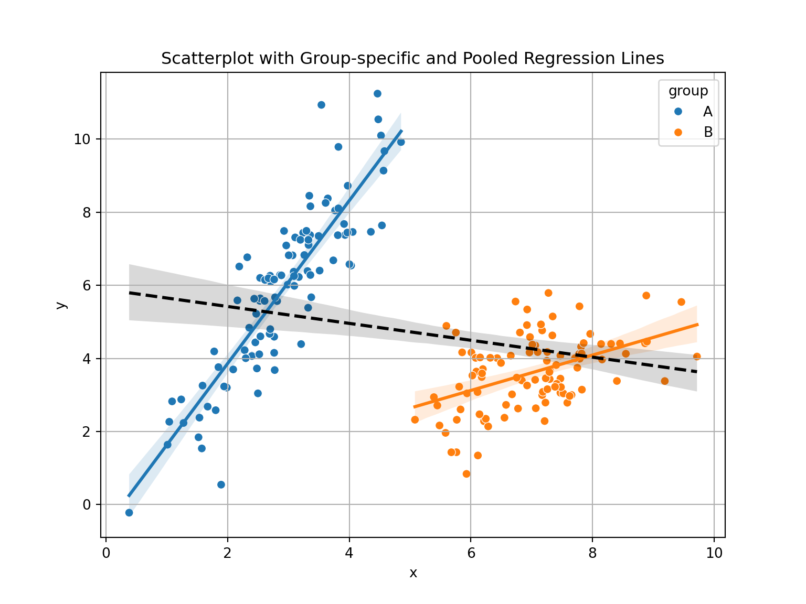

from scipy import stats
print(stats.chi2.ppf(0.95, df = 1))3.841458820694124The Chi-square test for independence is used to determine whether two categorical variables are independent. Given a contingency table of observed counts \(O_{ij}\), compute expected counts under independence:
\[ \begin{align*} E\_{ij} &= \frac{\text{(row total)}_i \times\text{(column total)}_j}{\text{grand total}} \\ \chi^2& = \sum_{ij} \frac{(O_{ij} - E_{ij})^2}{E_{ij}} \end{align*} \]
Where we let \(O_{ij}\) denote observed in each cell ij and \(E_{ij}\) denote expected. \(df = (rows − 1)(columns − 1)\)
A survey records whether people prefer coffee or tea in two regions:
| Coffee | Tea | Total | |
|---|---|---|---|
| Region A | 30 | 20 | 50 |
| Region B | 40 | 10 | 50 |
| Total | 70 | 30 | 100 |
Set up the hypotheses.
Compute the expected counts.
Compute the chi-square statistic.
Test independence at \(\alpha=0.05\)
What do you conclude?
\(H_0\): Coffee preference is independent of region. \(H_a\): They are dependent.
E.g., \(E_{11} = \frac{50*70}{100} = 35\)
Expected table:
| Coffee | Tea | |
|---|---|---|
| Region A | 35 | 15 |
| Region B | 35 | 15 |
\[ \chi^2 = \frac{(30-35)^2}{35} + \frac{(20-15)^2}{15} + \frac{(40-35)^2}{35} + \frac{(10-15)^2}{15} = 7.62 \]
from scipy import stats
print(stats.chi2.ppf(0.95, df = 1))3.841458820694124Tests whether observed frequencies match a specified distribution (e.g., uniform, Poisson, etc.).
The test statistic is found as below
\[ \chi^2 = \sum_i \frac{(O_i - E_i)^2}{E_i} \]
\[ \text{df} = \text{number of categories} - 1 \]
A six-sided die is rolled 60 times. The results:
Face: 1 2 3 4 5 6
Freq: 10 12 9 11 8 10We want to find out if these results are consistent with a fair die?
State the hypotheses.
Compute the expected count.
Compute the test statistic and p-value.
Interpret the result.
\(H_0\): The die is fair. \(H_a\): The die is not fair.
Expected = 60/6 = 10 per face
\[ \chi^2 = \sum \frac{(O_i - 10)^2}{10} = \frac{(0)^2 + (2)^2 + (-1)^2 + (1)^2 + (-2)^2 + (0)^2}{10} = \frac{0+4+1+1+4+0}{10} = 1 \] First we will find the degrees of freedom, such that we can have a proper critical value.
\(df = 6 − 1 = 5\), critical value is then \(\chi^2=11.07\).
We can find the exact critical value and compute the p-value of the test in Python.
print(stats.chi2.ppf(0.95, df = 5))11.070497693516351## Note for that chi square test we find the p-value by looking at the right tail
print(1-stats.chi2.cdf(1, df = 5))0.9625657732472964A survey was conducted to determine if there’s an association between gender (Male, Female) and preference for a new product (Like, Dislike).
Data
| Like | Dislike | Total | |
|---|---|---|---|
| Male | 30 | 20 | 50 |
| Female | 20 | 30 | 50 |
| Total | 50 | 50 | 100 |
State the null and alternative hypotheses.
Calculate the expected frequencies.
Compute the chi-squared test statistic.
Determine the degrees of freedom.
At \(\alpha=0.05\), determine the critical value and conclude the test.
\(H_1\): Gender and product preference are not independent.
Male-Like: (50×50)/100 = 25
Male-Dislike: (50×50)/100 = 25
Female-Like: (50×50)/100 = 25
Female-Dislike: (50×50)/100 = 25
\[ \chi^2=\sum^n_{ij}\frac{(O_{ij}-E_{ij})^2}{E_{ij}}=\frac{5^2+(-5)^2+5^2+(-5^2)}{25}=\frac{100}{25}=4 \]
We can now compute the degrees of freedom simply by looking at the table. \(df=(rows-1)(columns-1)=(2-1)(2-1)=1\), which nets \(\chi_{1,0.05}^2=3.841\)
Critical value at \(\alpha=0.05\) and df = 1 is 3.841. Since 4 > 3.841, we reject \(H_0\). There is a significant association between gender and product preference.
Explain how the chi-squared distribution is related to the standard normal distribution.
Describe the relationship between the standard normal distribution and the chi-squared distribution.
If \(Z\) is a standard normal variable, what is the distribution of \(Z^2\)?
\[ X=\sum^k_{i=1}Z_i^2\sim\chi^2_k \] I.e. a chi-square distribution with k degrees of freedom.
Explain what a contingency table shows in the context of testing independence.
Why are expected counts calculated, and how do they relate to independence?
A contingency table displays the frequency distribution of variables and helps test whether two categorical variables are independent.
Expected counts are computed under the assumption of independence. Large deviations between observed and expected suggest dependence.
A six-sided die is rolled 120 times. The outcomes are: \(1: 10, \ 2: 14, \ 3: 19, \ 4: 24, \ 5: 25, \ 6: 28\)
Set up hypotheses.
Compute expected frequencies.
Perform the chi-squared test at \(\alpha=0.05\).
Interpret the results of the test. How would changing \(\alpha\) change the results of the test?
\(H_0\): Die is fair. \(H_1\): Die is not fair.
Expected: \(120/6 = 20\) for each face.
We find the test statistic. \[ \chi^2 =\frac{100+36+1+16+25+64}{20} =\frac{242}{20}=12.1 \] We can easily find that \(df=6-1=5\)
Now we complete the rest of the computation with Python or with a table.
from scipy import stats
import numpy as np
## Critical value at alpha=0.05 and df=5
print("Critical value: ", stats.chi2.ppf(0.95, df = 5))Critical value: 11.070497693516351## p-value
print("p-value: ", 1-stats.chi2.cdf(12.1, df = 5))p-value: 0.033442946211414415## alternatively we can use the chisqtest in r
data=np.array([10, 14, 19, 24, 25, 28])
expected = np.ones(6)/6*120
chi2, pvalue = stats.chisquare(f_obs=data, f_exp = expected)
print("Chi-squared statistic:", chi2)Chi-squared statistic: 12.099999999999998print("p-value:", pvalue)p-value: 0.033442946211414415print("Expected frequencies:\n", expected)Expected frequencies:
[20. 20. 20. 20. 20. 20.]With a p-value of about 3%, we can reject \(H_0\) at \(\alpha=0.05\)
Use Python to simulate a 3x2 table, given by the code below, and conduct a chi-squared test. Interpret the results. Use \(\alpha=0.05\) as the significance level.
np.random.seed(1)
# Create 3x2 matrix of random integers from 1 to 100
data = np.random.choice(np.arange(1, 101),
size=6, replace=False).reshape((3, 2))
chi2, p, dof, expected = stats.chi2_contingency(data)
# Output
print("Data:\n", data)Data:
[[81 85]
[34 82]
[94 18]]print("Chi-squared statistic:", chi2)Chi-squared statistic: 70.32890811890222print("Degrees of freedom:", dof)Degrees of freedom: 2print("p-value:", p)p-value: 5.348988237051145e-16print("Expected frequencies:\n", expected)Expected frequencies:
[[88.05583756 77.94416244]
[61.53299492 54.46700508]
[59.41116751 52.58883249]]Chi-squared test returns statistic, df, and p-value. Interpretation depends on p-value vs alpha. If our p-value is below that of 0.05, which is our current significance level, then we can reject the null hypothesis, \(H_0\).
Hint: When \(Y\sim\mathcal{N}(\mu, \sigma^2)\), we have that \(E[Y^4]=3\sigma^4\)
\[ X=\sum^k_{i=1}Z^2_i \] Where \(Z_i\sim iid \mathcal{N}(0,1)\)
Now we can begin computing the expectation:
\[ E[X]=E\left[\sum^k_{i=1}Z^2_i\right]=\sum^k_{i=1}E[Z_i^2] \] Now, we can be a bit clever here. Since \(Z\sim\mathcal{N}(0,1)\), and \(Var[Y]=E[Y^2]-(E[Y])^2\), we get
\[ E[Z^2]=Var[Z]+(E[Z])^2 \quad \Rightarrow \quad E[Z^2]=1+0=1 \] This lets us fully compute the expected value for \(X\). We use the fact that we have identical distribution to simpify the notation.
\[ E[X]=\cdots=kE[Z^2]=k*1=k \] Now we can do the same procedure with the Variance. Recall, since \(Z_1,...,Z_k\) are independent, we have that the variance of the sum is the sum of the variances.
\[ Var[X]=Var\left[\sum^k_{i=1}Z^2_i\right]=\sum^k_{i=1}Var[Z_i^2] \] Now, we again use the ralationship that \(Var[Y]=E[Y^2]-(E[Y])^2\). We already know that \(E[Z^2]=1 \Rightarrow (E[Z^2])^2=1\). Now we need only determine \(E[(Z^2)^2]=E[Z^4]\). Using the hint, we have that \(E[Z^4]=3\sigma^4=3*1^2=3\), and we then get:
\[ Var[Z^2]=3-1=2 \] Now we use that we have k identical distributions to get the variance of \(X\) \[ Var[X]=\cdots=kVar[Z^2]=k*2=2k \]
A researcher models expected frequencies of customer types and compares to observed values. Expected: \(\{40, 35, 25\}\), Observed: \(\{38, 30, 32\}\) Conduct a goodness-of-fit test by hand.
\[ \chi^2 = \frac{(38-40)^2}{40} + \frac{(30-35)^2}{35} + \frac{(32-25)^2}{25} = 0.1 + 0.714 + 1.96 ≈ 2.53 \] \(df=3-1=2\)
At a significance level of \(\alpha=0.05\) we then get a critical value of 5.99, which is higher than the test statistic. I.e. it seems the data fits the distribution well enough.
University admits 30% of male applicants and 25% of female applicants overall. In Engineering, 90% of women and 70% of men were accepted. In Arts, 10% of women and 5% of men were accepted.
How could this occur.
Explain how aggregated vs. disaggregated data leads to paradox.
If way more female students were to apply to arts than to engineering, the total acceptance rate of women would decrease drastically. And if for instance, only 20 men applied to arts, and just one got accepted, then this would hardly have any effect if the engineering department was popular among men.
Aggregation can mask subgroup differences. Simpson’s paradox highlights lurking confounders.
Use Python to simulate two groups and plot overall vs subgroup relationships. Create a scenario in which Simpson’s paradox would apply. The script underneath gives an idea for two simulated groups where Simpson’s paradox could apply.
import numpy as np
import pandas as pd
import matplotlib.pyplot as plt
import seaborn as sns
# Set seed
np.random.seed(42)
# Create data
group = np.repeat(['A', 'B'], 100)
x = np.concatenate([np.random.normal(3, 1, 100), np.random.normal(7, 1, 100)])
y = np.concatenate([
2 * x[:100] + np.random.normal(size=100),
0.5 * x[100:] + np.random.normal(size=100)
])
data = pd.DataFrame({'x': x, 'y': y, 'group': group})
# Plot
plt.figure(figsize=(8, 6));
sns.scatterplot(data=data, x='x', y='y', hue='group');
sns.regplot(data=data[data['group'] == 'A'], x='x', y='y', scatter=False, label=None);
sns.regplot(data=data[data['group'] == 'B'], x='x', y='y', scatter=False, label=None);
sns.regplot(data=data, x='x', y='y', scatter=False, color='black', line_kws={"linestyle": "--"});
plt.title('Scatterplot with Group-specific and Pooled Regression Lines');
plt.grid(True);
plt.show();
Example: Drug Effectiveness Study In a clinical trial, Drug A appears less effective than Drug B overall:
Drug A: 60% recovery
Drug B: 70% recovery
But when you break it down by age group:
Under 50:
Drug A: 90%
Drug B: 80%
Over 50:
Drug A: 30%
Drug B: 20%
Despite being better in both age groups, Drug A looks worse overall because more older, high-risk patients were given Drug A — a classic Simpson’s Paradox.
Explain difference between correlation and covariance.
Interpret \(r = -0.8\).
Covariance is is not is not constrained by any upper or lower bound, whereas correlation is a normalized version bounded on \([−1,1]\), which show how close two variables are to be “perfectly related”.
\(r=-0.8\) would indicate a strong negative linear raltionship between two variables. If you were to plot their points in a two-dimensional plain they would be quite close to creating a neat line.
see plot below
import numpy as np
import pandas as pd
import matplotlib.pyplot as plt
import seaborn as sns
# Set seed
np.random.seed(123)
# Define mean and covariance matrix
mu = [0, 0]
Sigma = [[1, -0.8],
[-0.8, 1]]
# Generate multivariate normal data
data = np.random.multivariate_normal(mu, Sigma, size=200)
df = pd.DataFrame(data, columns=['x', 'y'])
# Check correlation
print("Correlation:", df['x'].corr(df['y']))Correlation: -0.7974792951296004# Plot
plt.figure(figsize=(8, 6));
sns.scatterplot(data=df, x='x', y='y', alpha=0.6);
sns.regplot(data=df, x='x', y='y', scatter=False, color='blue');
plt.title("Scatterplot of Two Variables with Correlation ≈ -0.8");
plt.grid(True);
plt.tight_layout();
plt.show();Given pairs: (1, 2), (2, 3), (3, 5)
Compute sample means.
Compute covariance and correlation.
\[ \mu_X=\frac{1+2+3}{3}=2, \quad \mu_Y=\frac{2+3+5}{3}=\frac{10}{3} \]
\[ Cov(X,Y)=\frac{(1-2)(2-3)+(2-2)(3-3)+(3-2)(5-3)}{2}=\frac{1+2}{2}=\frac{3}{2} \] Now we need the respective standard deviations, which turn out to be, after not much work
\[ s_X= 1, \quad s_Y=\sqrt{14/6}=\sqrt{7/3} \] Finally, we can compute \(r_{XY}\)
\[ r_{XY}=\frac{3/2}{\sqrt{7/3}}=\approx 0.98 \]
Simulate two variables and visualize correlation. Example below
import numpy as np
import matplotlib.pyplot as plt
# Simulate data
np.random.seed(42) # Optional: for reproducibility
x = np.random.normal(size=100)
y = 2 * x + np.random.normal(size=100)
# Plot;
plt.scatter(x, y);
plt.title("Scatterplot of x vs y");
plt.xlabel("x");
plt.ylabel("y");
plt.grid(True);
plt.show();
With the simulation above you should get a very strong positive correlation between X and Y. You can see this visually in that it would be very easy to draw a positive linear relationship between them that seems representative for the points given.
Researchers collected data on the size of their feet for a group of right-handed male and females and counted how many of each sex had a left-foot larger than the right, equal feet or right foot larger than the left. The results are given in the table here:
| Sex | L>R | L=R | L<R | Total |
|---|---|---|---|---|
| Men | 2 | 10 | 28 | 40 |
| Women | 55 | 18 | 14 | 87 |
Does the data indicate that gender has a strong effect on the development of foot asymmetry? Specify the null- and alternative hypothesis, compute the \(\chi^2\) test statistic and obtain the p-value.
A company wants to assess whether customer response (Yes/No) to a marketing campaign depends on the platform used (Email, SMS, Social Media).
| Response | SMS | Social Media | |
|---|---|---|---|
| Yes | 120 | 45 | 80 |
| No | 180 | 105 | 120 |
The Norwegian Labour and Welfare Administration (NAV) organizes online job application workshops on Teams. The course responsible has noticed that except for himself, the attendees that have their camera on during the course is mostly the older participants. He wonders if there is a relationship between participants having camera on and participant’s age group? He therefore takes a screenshot of the meeting (that he deletes afterwards, of course) and counts the number of faces he sees for the different ages. The results are given in the table below. Perform a chi-squared test to answer this question, including setting up the hypothesis, finding the p-value and making your conclusion. Remember to settle on a significance level first.
|Camera on| 18–35| 36–53| 54-70| Total| |Yes| 4| 3| 20| 27| No |20| 13| 39| 72| Total |24| 16| 59 |99|
Is there a Simpson’s paradox here?